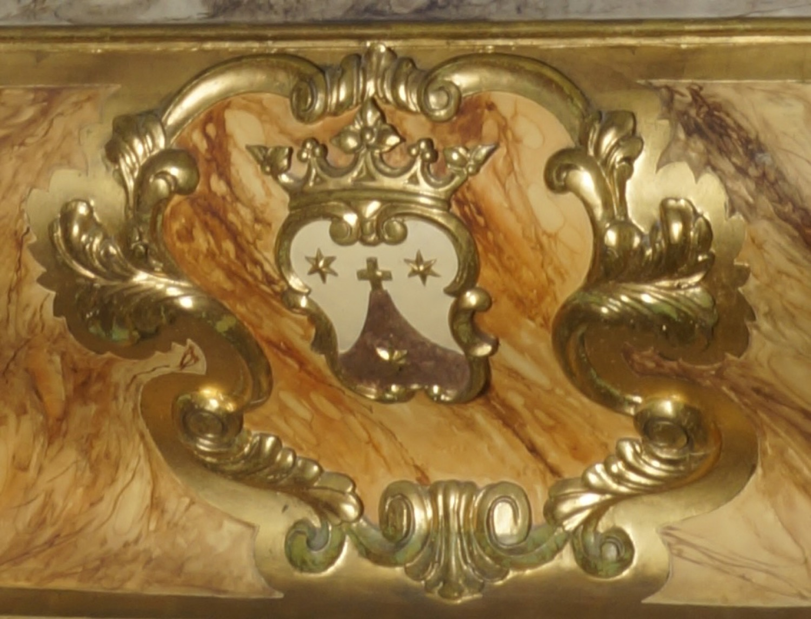

L’escut de l’Orde del Carme està format per un puig coronat amb una creu que representa el mont Carmel (situat a prop de Haifa, Israel), lloc d’origen de l’orde; tres estrelles de sis puntes, interpretades habitualment com una referència a la Verge Maria, la central, i als profetes Elies i Eliseu, les laterals, i una corona, que simbolitza el Regne de Déu.